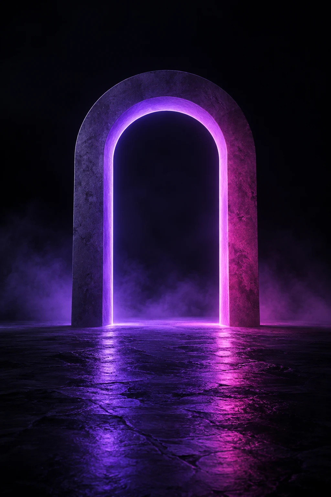

Abre posibilidades.
Recorre oportunidades por tipo y busca por disciplina o lugar. Filtra por España o lengua hispana, disciplinas y fechas. Cada ficha identifica su fuente y revisión.
Descubre trabajo, concursos, financiación, residencias y becas de España y lengua hispana, de distintas disciplinas. Prepara tu próximo paso creativo con claridad.

Donde tu talento encuentra dirección.Proyecta-T nace para reunir la búsqueda y la preparación en un mismo lugar. Un radar creativo y un espacio propio para pasar de «me interesa» a «voy a por ello».
Recorre oportunidades por tipo y busca por disciplina o lugar. Filtra por España o lengua hispana, disciplinas y fechas. Cada ficha identifica su fuente y revisión.
Guarda lo que despierta tu interés. Consulta los requisitos y entiende qué tendrás que preparar.
Organiza cada candidatura con tareas y notas. Retoma tu progreso desde el mismo navegador.
Usa los filtros, guarda una oportunidad y prepara una candidatura en «Mi camino».
Entrar en el radar ↗Las solicitudes se presentan en las webs oficiales. El progreso se guarda en este navegador.
Crea tu propuesta, carta de presentación y lista de requisitos vinculadas a una oportunidad.
Crear mis documentos ↗Artes plásticas y visuales, fotografía, literatura, danza, teatro, música, diseño, gastronomía, audiovisual, pódcast, sonido, iluminación, tatuaje, peluquería, estética, maquillaje, estilismo, joyería y artesanía. Encuentra concursos, empleo y apoyo a proyectos; consulta las condiciones de cada convocatoria antes de presentarte.
¿Quieres contarnos qué oportunidades buscas o colaborar con Proyecta-T? Escríbenos.